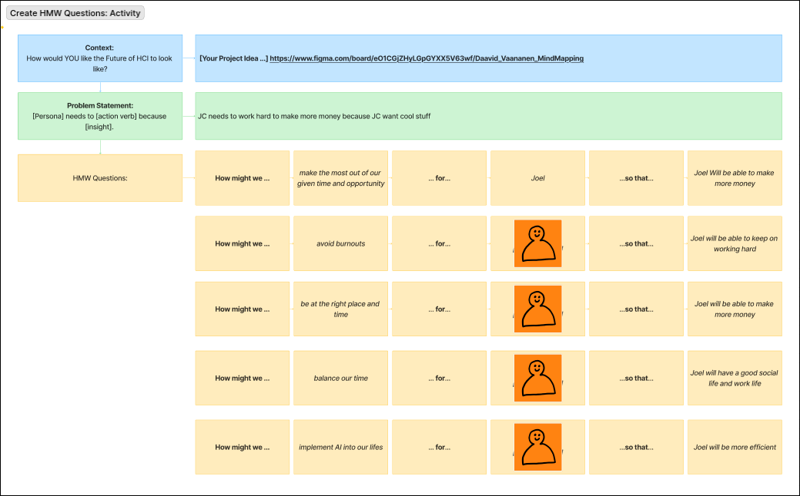
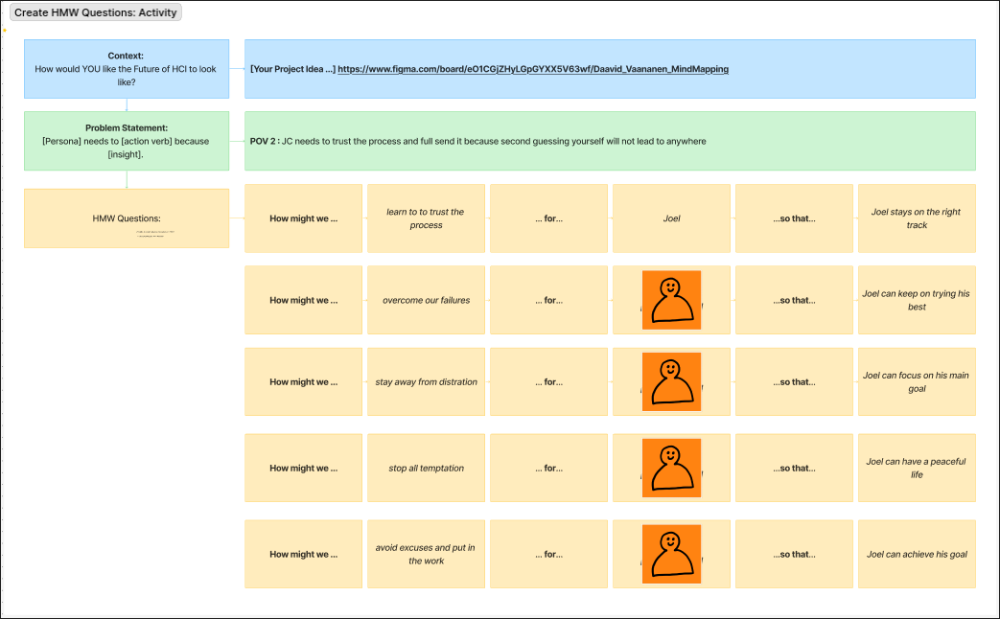
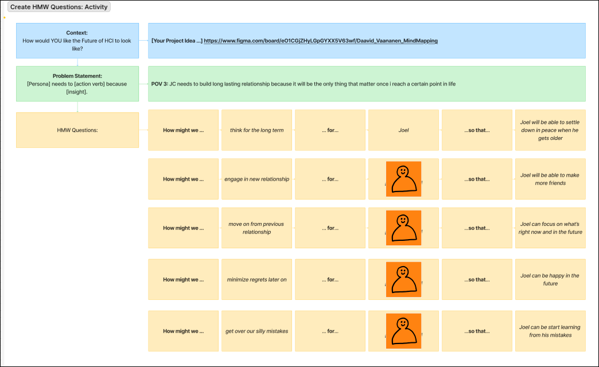

By Using How Might We question i was able to become a better UX/UI designer
This course has also thought me how to evuluate my POV so that it will eventually lead to my HIGH-FI prototype and now my Portfolio you are seeing now, it is not the best but it is something i made


